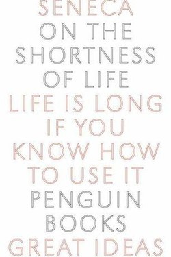

Library › Psychology & People
On the Shortness of Life — Summary & Key Lessons

The Roman essay that started the genre: life is not short — we make it short by wasting it.
📖 OPEN THE FULL INTERACTIVE BREAKDOWN →🌐 Read it in Hindi, Hinglish, Gujarati, Tamil & 22 more languages — free, with audio.
💡 The Big Idea
Seneca's forty-page explosion against busy-ness: life is long enough for greatness if it is well managed, but we leak it through idleness, luxury, obligation and the postponement of living. His prescriptions: treat every day as a complete life, schedule leisure as seriously as work, escape the crowd of commitments, and begin the study of wisdom now — because the time to live is now, not someday. The essay reads like it was written yesterday.
🧠 The 6 Key Lessons
Lesson 1: Life Is Long Enough — If You Spend It
Chapter 1: The Diagnosis
Seneca's opening counter: nature gave us a generous life; the complaint of shortness is self-inflicted. We guard money, reputations and property fiercely, but guard time — the only resource that cannot be recovered — with nothing. The audit is simple: add up how many hours went to obligation, entertainment and worry, and see how much of your life was actually yours.
📖 Example: A person who 'has no time' for a decade of evenings can name every show they watched. Read the full example →
⚡ Do this: For three days, log every hour, then label: mine, obligation, waste. Read the ratio.
Lesson 2: The Busy Are Not the Living
Chapter 2: The Crowd of Obligations
Seneca attacks busyness as a form of hiding — the frantic schedule is often an escape from the one thing that matters. He reserves special contempt for the man who has no time for himself. The cure is not more efficiency but less ownership: decline invitations, drop vanity projects, and guard the space where your own life happens.
📖 Example: The most successful people in history are often famous for saying no — the calendar is a moral document. Read the full example →
⚡ Do this: Delete or decline two commitments this week — and do not replace them.
Lesson 3: Leisure Is Serious Work
Chapter 3: Otium
The Romans had a word for the good kind of free time: otium — leisure devoted to study, reflection and friendship. This is not laziness; it is the active pursuit of wisdom, and it is what makes life feel long. Seneca recommends the study of philosophy in retirement as the true harvest of a working life.
📖 Example: The retired executive who dives into history and music lives differently from the one who drifts between clubs. Read the full example →
⚡ Do this: Book one regular, protected block of otium: reading, writing or thinking, no output required.
Lesson 4: Begin Now — Today Is Not a Rehearsal
Chapter 4: The Start
Seneca's sharpest arrow: we postpone living, assuming the best part is coming. But you cannot understand a whole play from its last act. Tomorrow is a scam; today is the only currency. The famous image: the journey of life, and how we keep getting ready to begin it.
📖 Example: The inheritance spent on the retirement that never comes; the sabbatical deferred until the health that never holds. Read the full example →
⚡ Do this: Take the thing you are saving for 'someday' and do one real slice of it this week.
Lesson 5: Die Well by Living Daily
Chapter 5: The Complete Day
Seneca's quiet masterpiece: treat each day as an entire life. If you can say each night 'I have lived fully today', then death — whenever it comes — finds you already complete rather than always just about to begin. The practice is a nightly close: review, let go, and sleep as one who has no unfinished hour.
📖 Example: The Stoic night review — what did I do well, badly, and what will I do tomorrow — is the oldest journaling habit. Read the full example →
⚡ Do this: Tonight, write three lines: the day's best act, worst act, and one thing tomorrow will not be postponed.
Lesson 6: The Preoccupation: Busy Is Not Living
On the Shortness of Life, 2-3
Seneca's sharpest cut: people guard their money, their houses and even their health, but hand out their time to anyone who asks — and time is the only thing that cannot be bought back. The busy life is not a full life; it is a crowded one. He invites you to audit: how much of your life belongs to you at all?
📖 Example: The man with the full calendar and the empty life: the schedule is the tombstone, inscribed in advance. Read the full example →
⚡ Do this: This week, decline one 'harmless' request and spend that hour deliberately on your own life — then notice what you defended.
✅ 5-Step Action Plan
- Log 72 hours; factor them into mine/obligation/waste.
- Decline two things this week without replacement.
- Book a protected weekly block of otium.
- Do one slice of the someday-thing this week.
- Close every day with the three-line review.
⚠️ When This Doesn't Work
Seneca wrote from wealth, slavery-backed privilege and a court full of intrigue — his advice presumes a freedom most people do not have. The direction is right; the feasibility varies with circumstance.
💀 The Graveyard Proves It
📷 Bunker Hunt — The Richest Men in America Try to Corner Silver — and Lose Everything. Burn: The Hunt brothers lost ~$1.5B of their own fortune Read the full case study →
💬 Best Quotes from On the Shortness of Life
- “It is not that we have a short time to live, but that we waste a lot of it.”
- “While we are postponing, life speeds by.”
- “Putting things off is the biggest waste of life: it snatches away each day as it comes.”
Interactive version: mark lessons as read, listen in your language, share quote cards.